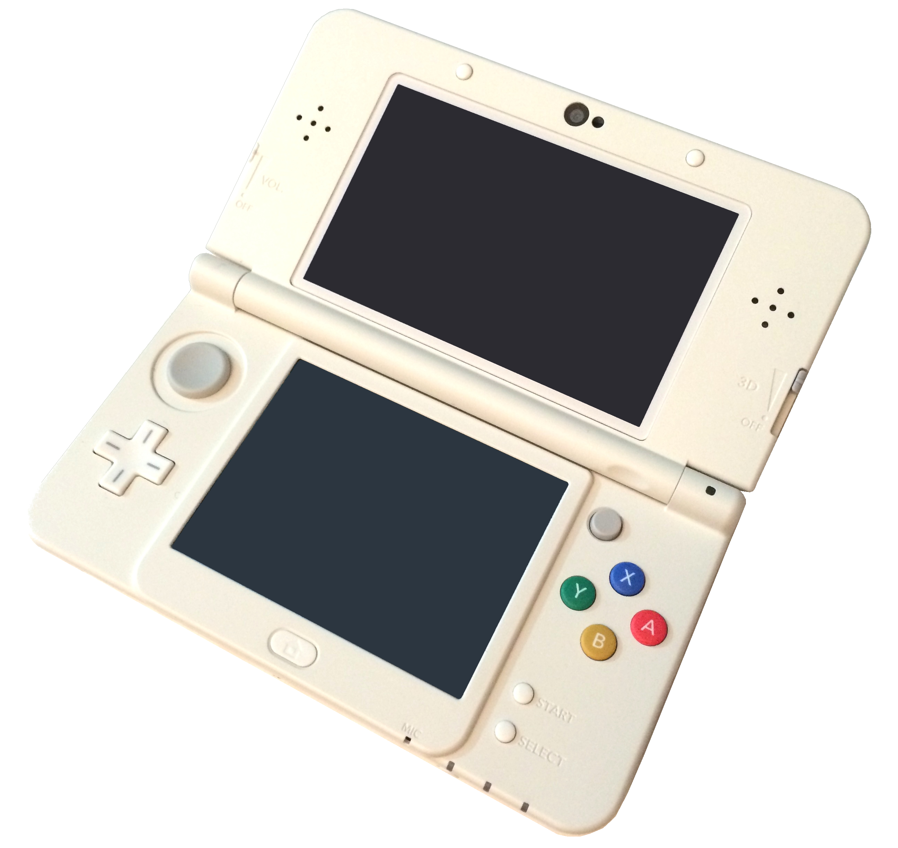

the nintendo ds family
History of the Systems
-
New 3DS
- In late 2014 to early 2015, Nintendo released its New Nintendo 3DS & New 3DS XL. This system
was very similar to the original 3DS. The upgrade was mainly hardware-based, and included better
storage, improved processing, and, according to the experience of some consumers, longer battery
life. Its main additions were two new buttons on the top left and right corners and a C-stick. The
C-stick added was finicky and uncomfortably rigid, making it somewhat difficult to control.
Moreover, the game cartridge slot was moved from the back of the console to the front, and the
normal-sized SD port included in the DSi and 3DS was replaced for a micro-SD card slot. The new
buttons allowed for more games to be developed exclusively for the New Nintendo 3DS. Most
audiences agree that, even if you own the original 3DS, the New 3DS is worth the $200
investment. To enhance that, the system will allow you to transfer all your data, even including
layout, from your original 3DS to your New 3DS. One major criticism the new design received
did not concern the new update at all, but rather a major flaw in Nintendo's packaging for this
console: it did not come with a charging cable. While this was not an issue for most buyers, because
the charger required was the same charger as the DSi, 3DS, and 3DS XL's, the lack of including a
charger with the device was extremely problematic for those who had not previously owned a DS, those
who were gifted the console, those who have lost their chargers, and more. Charging cables costed
$6-$12 when bought separately. The failure to include this critical accessory disheartened many
gamers. Nevertheless, the New Nintendo 3DS was mainly a success.
- The New Nintendo 3DS XL was the last release in the DS family, and has since been
discontinued.

Source: Philip Terry Graham. New Nintendo 3DS. en.wikipedia.org
(https://en.wikipedia.org/wiki/New_Nintendo_3DS#/media/File:New_Nintendo_3DS.png)